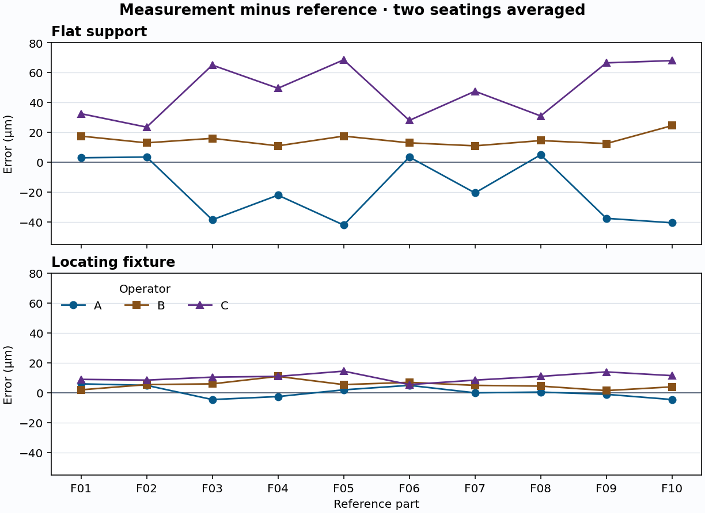

Qualify a production measurement fixture
A production station measures a 20 mm feature. The same reference part passes on one shift and fails on another. Use a crossed measurement study to find the source and test a fixture change.

Photo by Daraceleste, scaled. Original photograph · CC BY-SA 4.0.

Watch. Watch how the operator places the board against stops. Identify the equivalent locating and probing checks for your fixture. Adafruit · QT Py production test fixture.
Cross operators with the same reference parts
The nominal dimension is 20.000 mm and the acceptable interval is 19.850–20.150 mm. Compare a flat support with a revised fixture that locates the feature against a defined datum. Use the same ten reference parts for both fixtures, including known good and out-of-limit samples. Each of three operators measures every part twice per fixture, removing and reseating the part each time. This gives 60 readings per fixture. In a live study, blind the operators to the reference readings and previous results, randomise each run, and record the gauge revision, master and environment.
Run this synthetic study with the 120 measurements and the Python analysis. The dataset has declared reference values. Real reference values also carry uncertainty and need a defensible basis before you use them to judge classification errors.
python3 fixture_study.py measurements.csvSeparate repeatability from operator and seating effects
Fit the balanced crossed model: reading = overall mean + part + operator + part × operator + repeat error. The interaction captures a measurement method that behaves differently for particular parts depending on who seats them. If each operator measured a different set of parts, those effects would be confounded. Repeatability comes from the spread within the same part and operator. Between-operator and interaction estimates describe changing operators on this fixture.
| Component | Variance estimate from mean squares |
|---|---|
| Repeat error | MSwithin |
| Part × operator | (MSinteraction − MSwithin) ÷ 2 repeats |
| Operator | (MSoperator − MSinteraction) ÷ (10 parts × 2 repeats) |
| Part | (MSpart − MSinteraction) ÷ (3 operators × 2 repeats) |
Each mean square is a sum of squares divided by its degrees of freedom. Here the four denominators are 30 within, 18 for interaction, 2 for operator and 9 for part. The script reports the raw component estimates and uses zero for any negative operator or interaction estimate when combining measurement variances. A negative estimate in a small study can reflect sampling uncertainty. The ten part sizes were selected for coverage and their variance is excluded from the gauge spread.

The flat fixture’s repeatability standard deviation is 4.968 µm. Combining its operator and interaction variances gives 37.927 µm of reproducibility variation within this study. The locating fixture gives 3.517 µm and 5.401 µm. Take the square root of the sum of those two variances, multiply by six, then divide by the 300 µm tolerance width. The result falls from 76.50% to 12.89%. This spread ratio leaves out absolute bias, drift and the reference uncertainty. Mean bias remains +5.400 µm after the fixture change. NIST · Gauge studies and uncertainty.
Keep ambiguous readings out of the automatic count
First classify any reading inside the declared interval as good. Then try an illustrative 25 µm guard band: accept 19.875–20.125 mm, reject below 19.825 mm or above 20.175 mm, and send everything between those decisions to an independent reference check. The boundaries belong to this experiment. A production band follows the approved decision rule and uncertainty budget.
| Fixture and rule | False accepts | False rejects | Review |
|---|---|---|---|
| Flat, binary | 10 | 6 | 0 |
| Flat, guarded | 2 | 2 | 21 |
| Locating, binary | 4 | 1 | 0 |
| Locating, guarded | 0 | 0 | 28 |
Part F09 has a reference dimension of 20.157 mm. Operator A reads 20.122 and 20.117 mm on the flat support, inside even the guarded acceptance interval. Widening a review band cannot correct a poor seating method on its own. The improved setup’s 28 reviews are repeated measurements from a sample deliberately concentrated near the limits. A production throughput estimate needs the production part mix and the time required to resolve a review.
Can you use these 60 readings to calculate production Cpk?
Collect independent output from a stable production process after qualifying the measurement. Here the same deliberately selected parts were repeatedly measured and their distribution represents the study design. A capability index needs the distribution of actual production output and an applicable calculation. NIST · Process capability.
Save the operator order, component estimates, which individual records changed classification and a proposed independent reference check. Add a follow-up check across shifts and after a fixture change before using the station to release parts. NIST · Planning a gauge study.
P146 · Turn measurement evidence into a cell acceptance decision